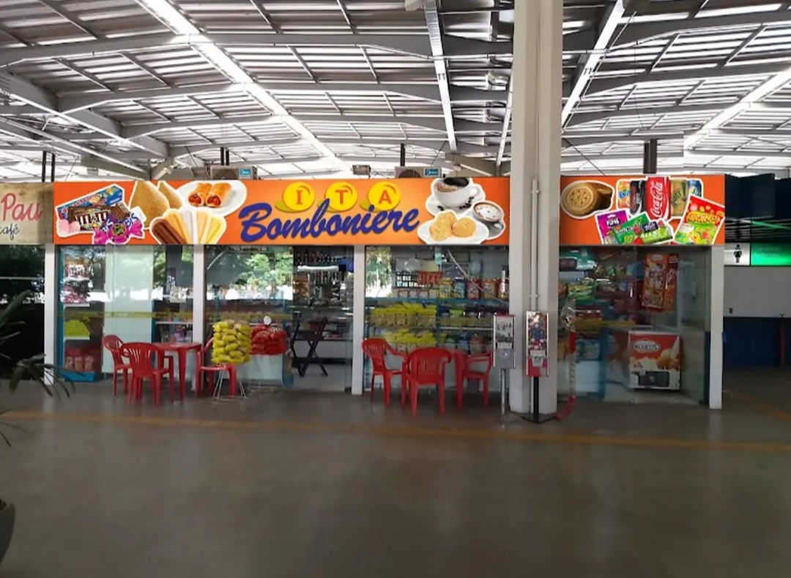
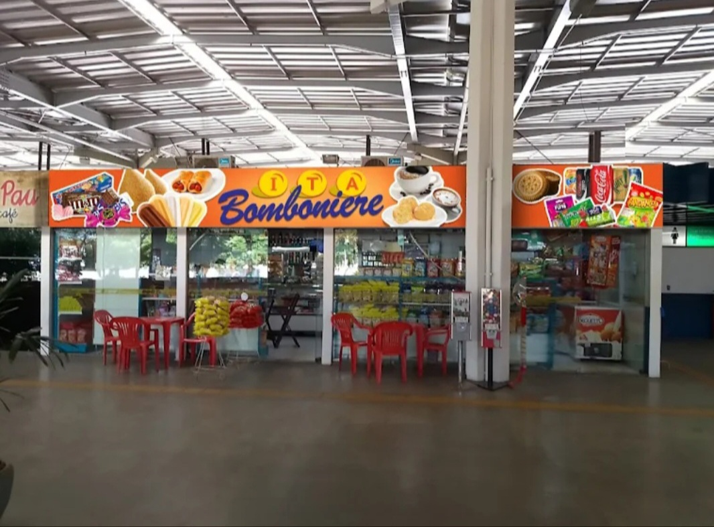
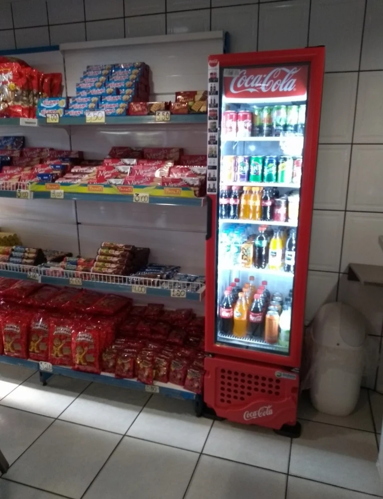
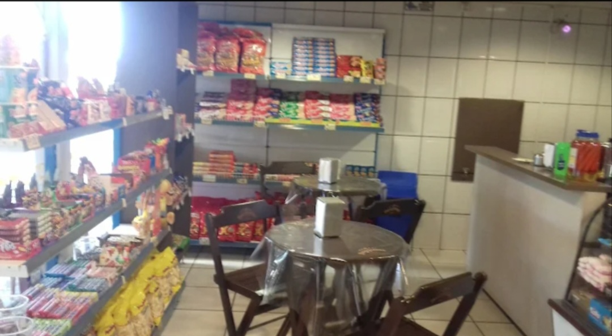
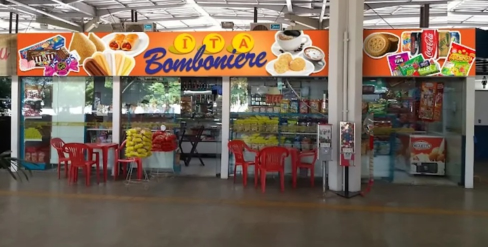

Bomboniere • Assis - SP
O EMPÓRIO BOMBONIERI DE ASSIS LTDA é referência em variedade, praticidade e atendimento de qualidade, localizado em ponto estratégico no Terminal Rodoviário de Assis.
Com uma ampla diversidade de produtos, a loja oferece doces, salgados, bebidas e itens ideais para quem está em viagem ou no dia a dia, sempre com atendimento ágil e eficiente.
O Empório se destaca pela organização, qualidade dos produtos e compromisso em proporcionar uma experiência prática e agradável aos clientes.
Endereço: Av. Getúlio Vargas, 1001
Bairro: Vila Nova Santana
Local: Terminal Rodoviário de Assis
Cidade: Assis - SP
Telefone: (18) 3323-3820
Ligar agora✔ Localização estratégica no terminal ✔ Grande variedade de produtos ✔ Atendimento rápido e eficiente ✔ Conveniência para viajantes ✔ Ambiente organizado ✔ Produtos de qualidade



